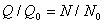
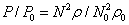
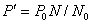
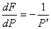
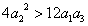

This section describes the theory of how forced flow elements are modeled with CONTAM. Forced flow elements include constant flow fans and variable flow fans. Constant flow fans include both constant volume and constant mass flow. Variable flow fans are modeled based on the input of a fan performance curve that relates pressure drop to airflow through the fan flow element.
One particularly simple but useful airflow element sets a constant flow between two nodes. Since the flow is constant, the partial derivatives of flow with respect to the node pressures must be zero. The constant flow element does not contribute to the Jacobian, [A], but it does add to the right side vector, {B}.
Constant flow elements do not mathematically link the pressures of the adjacent nodes. It is necessary that all node in the network be linked to constant pressure nodes in order to have a unique solution. Violation of this restriction will produce a division by zero somewhere in the solution of the equations. Consider the following simple network:
|----C1----|----F1----|----C2----|----F2----|----C3----|
P1 P2 P3 P4 P5 P6
where P1 and P6 are known pressures, and F1 and F2 are known flows. Since the flow through C2 is determined by P3 - P4, and no other flow is related to those pressures, there are not enough equations to determine P3and P4 uniquely. This is a mathematical expression of the fact that it is possible for F1 and F2 to be assigned different flows, which produces a physically impossible condition.
CONTAM provides two constant flow elements: one for constant mass flow and one for constant volumetric flow.
The theory of flows induced by fans is summarized in Chapter 18 of the 2000 ASHRAE HVAC Systems and Equipment Handbook [ASHRAE 2004]. More extensive treatment is given in [Osborne 1977]. Fan performance is normally characterized by a performance curve which relates the total pressure rise to the flow rate for a given fan speed and air density. Conversion to another fan speed or density is done with the fan laws.
|
 |
(53) |
or
|
|
(54) |
and
|
 |
(55) |
where
Q = volume flow rate,
F = mass flow rate,
P = total pressure rise,
r = density,
N = rotational speed, and
subscript 0 indicates values at the rating conditions for the fan.
These laws are valid if all flow conditions at the two speeds are similar. In particular, they will not apply at very low flows where fully turbulent conditions have not been developed.
In CONTAM the fan performance curve is represented by a cubic polynomial:

|
(56) |
with

|
(57) |
The polynomial coefficients are developed with air density and fan speed at the rating conditions. Therefore, when N and r are not at the rating conditions, convert the actual pressure rise P to P0.

|
(58) |
Solve (56) for F0using iterative or analytic solution and (57) for P’0. Convert these values to current conditions.

|
(59) |
and
|
 |
(60) |
The derivative for flow with respect to pressure drop is given by
|
 |
(61) |
There are two important factors to note on the shape of the fan performance curve. First, it is described by a relationship of the form P(F) instead of F(P) which would be more appropriate for the calculation of flow and partial derivatives for the Jacobian. The basic shape of the performance curve cannot be well represented by a simple polynomial with P as the independent variable. CONTAM uses an analytic solution of the cubic polynomial (56) to determine F as a function of P.
Second, it is common for the performance curve to contain points of contraflecture (where P’ = 0) creating up to three different flow rates at certain values of fan pressure rise. This causes difficulty in solving for the flow rate and has points where dF/dP goes to infinity. However, it is usually not recommended that the fan operate in the region of the contraflecture points. Therefore, the fan can be modeled with a performance curve that does include the contraflecture so long as you make sure that the air distribution system has not operated in that region.
You can identify the points of contraflecture from the coefficients of the polynomial. Solving equation (56) for F gives:

|
(62) |
|
 |
There are two real points of contraflecture |
|
|
There is a point of inflection which still has the derivative problem |
|
|
The fan performance curve is monotonic and well-behaved for computing the derivatives for the Jacobian. |